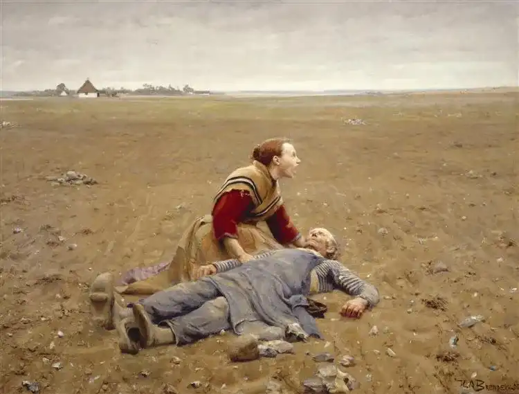

<h1>WORN OUT</h1>
<hr class="hracc">

<legend>Worn Out de Hans Andersen Brendekilde</legend>
<hr class="hracc_3">
<p><li>Date: 1930</li>
<li>Style: Realism, Art nouveau</li>
<li>Genre: paysage, wildlife painting</li>
<li>Media: oil</li>
</p>
